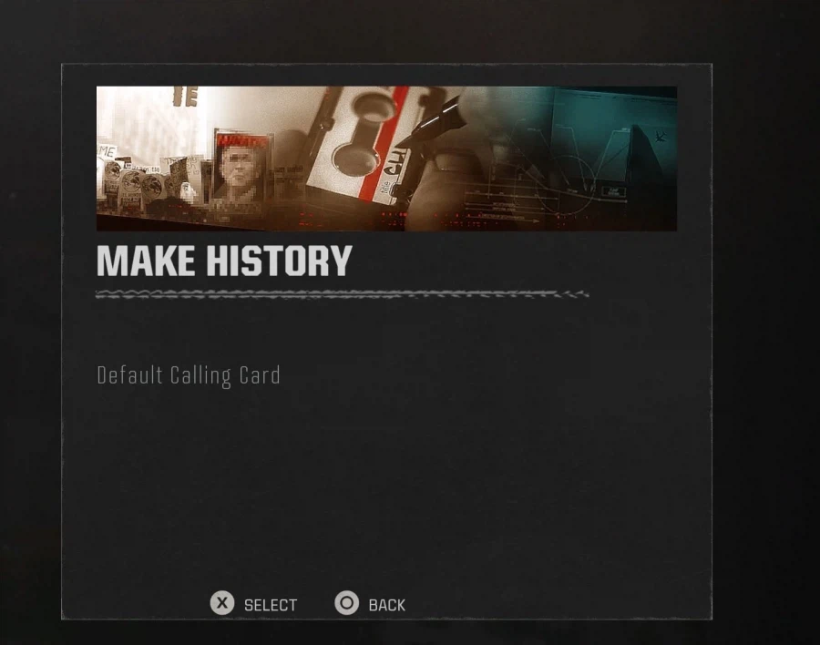
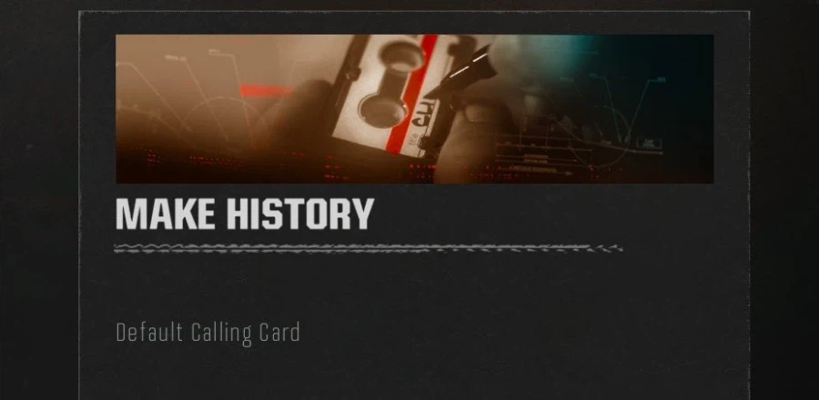
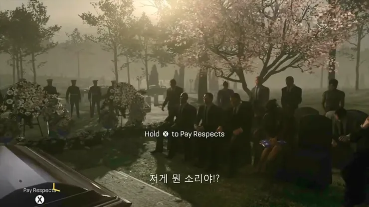

콜옵 이태원 참사 영상 삽입한것에 대해
9.11 테러는 잘만 가져다 쓴다고 쉴드 치던 사람들이 많은데

블랙옵스 6 출시 당시 911테러를 연상 시킨다는 콜링카드 배너

논란이 일자 칼삭함
자꾸 미국은 안그런데 한국만 지나치게 예민하다 민감하다 이러는데
미국이 더 민감하면 민감했지 한국보다 덜 민감하지 않음
오히려 고소가 더 심한 나라가 미국이라 전쟁이나 참사 이런 영상들에 더 민감한게 미국임

전사자 기리는 컷신에 qte넣어서 욕 졸라게 먹었던게 미국임...
그런 이미지를쓰는게 다른 사람을 존중하는거라고 생각하고 문제가없다고 생각하는거야?
제발 다들 정신차려줘..